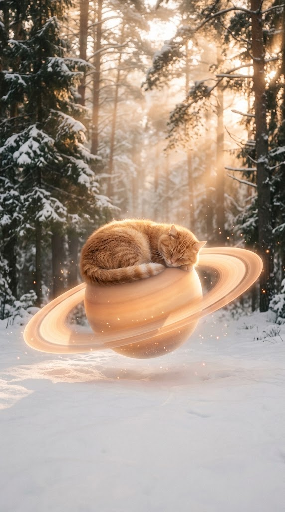
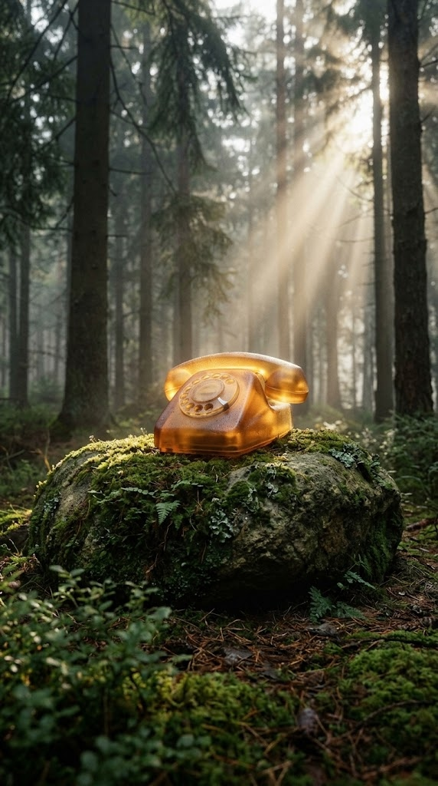
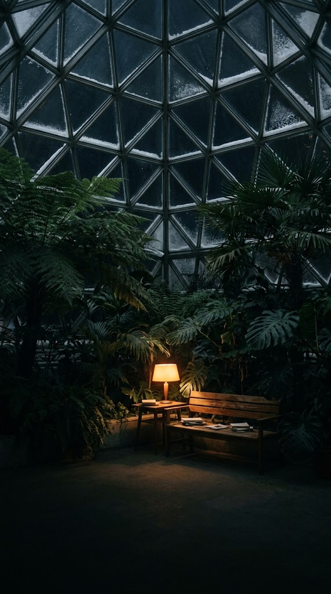

Астра на Алтае
Флагманский арт: героиня в позе лотоса на плато Алтая на рассвете.
Пейволл / Главная
Кот на Сатурне
Спящий рыжий кот на светящемся кольце Сатурна в заснеженном лесу на закате.
Фокус дня / КартаЧай на Подоконнике
Две чашки с лимоном, пар сплетается в два светящихся силуэта из звёздной пыли.
Любовь & Соулмейт
Янтарный Телефон
Винтажный дисковый телефон из прозрачного янтаря на мшистом валуне в лесу.
Карьера & ФинансыРояль в Облаках
Полированный рояль в рассветном море облаков с веточкой рябины в инее.
Дневник Снов
Зимний Сад НИИ
Ботанический сад под куполом ночью, папоротники и тёплый абажур лампы.
Исцеление & Звук